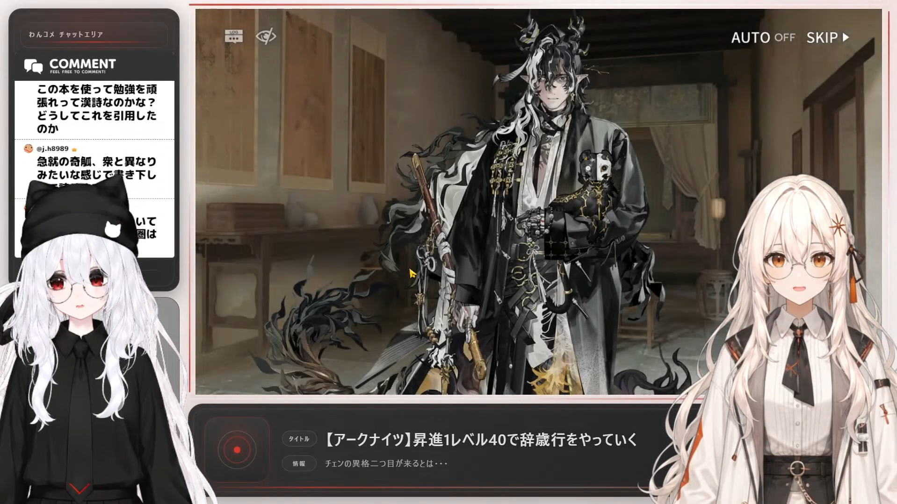
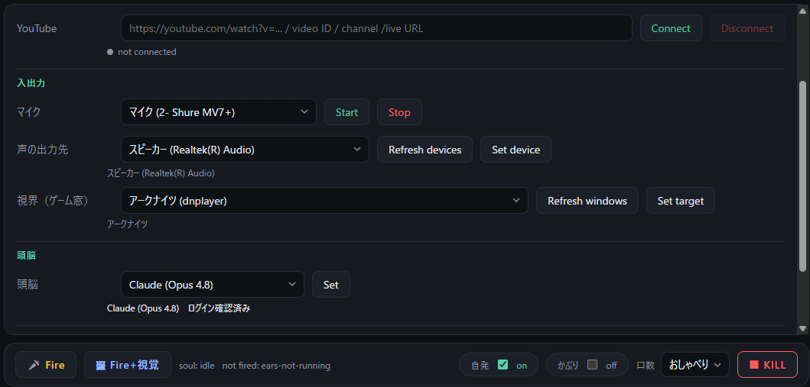

生成AIなんでも展示会 Vol.6 出展パネル

※ 人間用PlayerとAI用Playerを起動し分けて運用

システム構成（配信中の流れ）
マイク入力
自分の声を取得
YouTubeコメント
視聴者のコメントを取得
ゲーム画面（視界入力）
画面を見て状況を認識
LLM（Claude）
コメントや状況に応じて返答を生成。設定に応じて自ら話題も出す
音声合成・表情／口パク制御
発話に合わせて口の形を同期。表情・視線・姿勢も状況に応じて変化
自作Playerでモデルを表示
人間用 / AI用を起動し分けて配信に出力
自作した範囲
モデル制作・モデリング
素材からリグ・表情・口パク・物理まで
AITuber実行系
マイク・コメント・視界・LLM・音声合成・制御を統合
Player
モデル表示・口パク・表情・姿勢制御／人間用とAI用を起動し分け
実配信での運用実績
この構成で実際にゲーム配信を行い、1時間40分 の安定稼働を確認した。
モデル制作から自作Playerでの表示、
AITuber実行系での配信運用まで動作を確認。